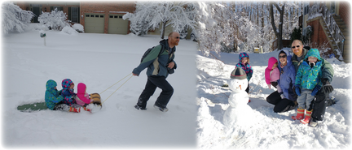
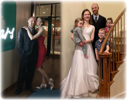
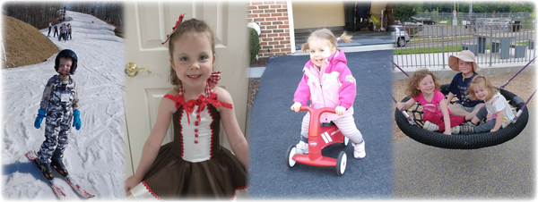
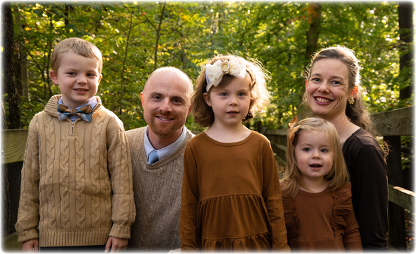

<link rel="stylesheet" href="css/article.css">
<style>
.signoff {
  margin: 15px 0 0 80px;
  margin-left: 80px;
}
.signoff p {
  margin: 0;
}
.signoff p.names {
  margin: 0 0 0 20px;
}
.benediction {
  font-weight: bold;
}
</style>
<title>Christmas Greetings 2022</title>
<main>
<div class="pad"></div>
<nav>{% include nav.html %}</nav>
<article>
<h1>Christmas Greetings 2022</h1>

<figure style="position:relative;top:10px" class="float-right">

<figcaption>Snowstorm!</figcaption>
</figure>

<p>It has been another full year for Team Hicks!  We started things
off with a big snowstorm (for Virginians, anyway) in early January.
The kids were thrilled.  We built snowmen and sledded by simply going
out our front door (also got to dig out our driveway).</p>

<p>We celebrated Valentine's Day this year by all getting Covid, but
did a better job celebrating other holidays.  The boys had a ski trip
to West Virginia (with Steve's brother), we all traveled to California
twice (family wedding, family reunion, Lego Land, and Emily finally
meeting her great-grandparents in person), and spent a delightful
Thanksgiving in Tennessee and Christmas in Florida.  Brie and Steve
celebrated their <a href="https://www.youtube.com/watch?v=fvrR0-z_cyA"
>10th wedding anniversary</a> with a trip to Virginia Beach (it was a
great trip, but the California girl <i>did</i> miss the Pacific).</p>

<figure class="float-left">

<figcaption>Ten years of marriage!</figcaption>
</figure>

<p>Steve still works remotely for Google and enjoys being able to join
the family for lunch or other activities on occasion.  Brie got
promoted to senior manager before transitioning to an independent
contractor role that allows her to spend more time with the kids.
Both continue to work on the American Heritage Education Project (our
website went live earlier this year: <a href="https://www.ahep1776.org"
>www.AHEP1776.org</a>).</p>

<p>The kids are all busy and have been trying out various activities
this year.  In addition to preschool, Awana and Classical
Conversations, this year they experienced soccer (older two), tennis
(Christopher), dance (Una), and swimming lessons (a highlight of the
week for all three).  Christopher is an avid reader and mathematician
enjoying legos and computer games.  Una is our resident artist
constantly working on creative projects.  Emily loves the outdoors (in
any weather), is incredibly independent (and as stubborn as the rest
of us), and enjoys puzzles.</p>

<figure>

<figcaption>Christopher (6), Una (4), and Emily (2)</figcaption>
</figure>

<p>We have been greatly blessed and are thankful for another year of
adventures.  We enjoy hearing from our wonderful friends and family,
but want to see more of you (in person!  So don't be strangers).</p>

<div class="signoff">
<p>Blessings,</p>
<p class="names">Team Hicks
<br>Brianna, Steve, Christopher, Una, and Emily</p>
</div>

<p class="benediction" style="width:102%">May the peace of
God guard your hearts and minds in Christ Jesus now and always!</p>

<figure>

<figcaption></figcaption>
</figure>
</article>
<div class="pad"></div>
</main>


